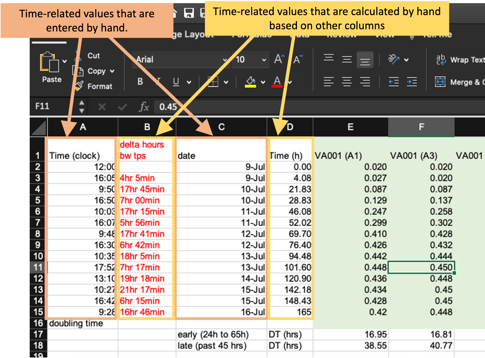
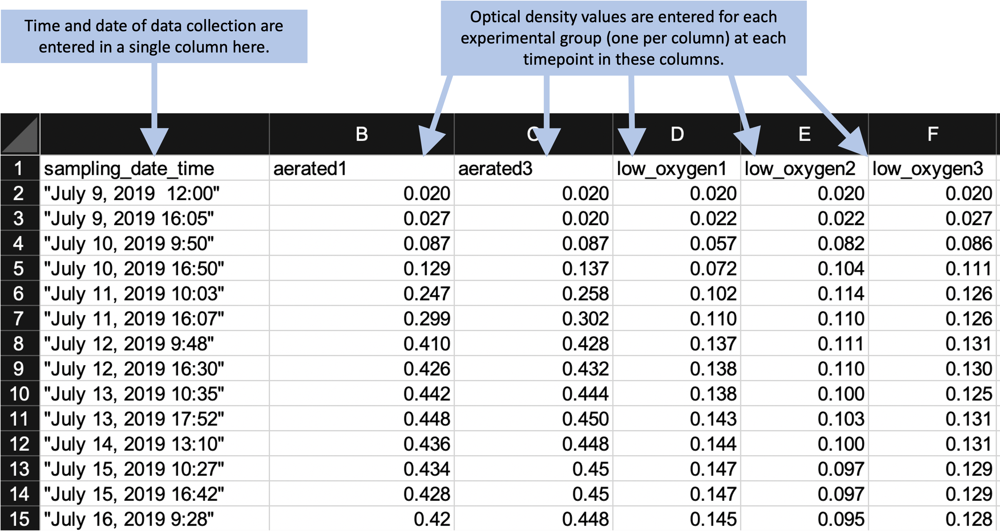

This module will move from the principles of the “tidy” data format to the practical details of designing a “tidy” data format to use when collecting experimental data. We will describe common issues that prevent biomedical research datasets from being “tidy” and show how these issues can be avoided. We will also provide rubrics and a checklist to help determine if a data collection template complies with a “tidy” format.
Objectives. After this module, the trainee will be able to:
In this module, we will use a real example of data collected in a biomedical laboratory. We’ll use this example to show how data is often collected in a way that is not “tidy,” focusing on the features of data collection that make it “untidy.” We’ll then describe some general principles for why and how to instead create and use tidy (or at least tidier) templates to collect data in the laboratory, and show how this can be the first step in a pipeline to creating useful, attractive, and reproducible reports that describe the data you collected. This module will focus on the principles of templates for tidy data collection, while in the next module we’ll dig deeper into the details of making this conversion for the example dataset that we use as a demonstration in this module.
Throughout this module, we’ll use a real dataset to illustrate principles of data collection in a biomedical laboratory. First, let’s start by looking at the original data collection template, and use this to walk through some details of this dataset.
Figure 2.2 provides an annotated view of the data set, showing the format used when the data were originally collected:
Figure 2.2: Example of an Excel spreadsheet used to record and analyze data for a laboratory experiment. Annotations highlight where data is entered by hand, where calculations are done by hand, and where embedded Excel formulas are used. The figures are created automatically using values in a specified column.
These data were collected to measure the compare growth yield and doubling time of Mycobacterium tuberculosis (the bacteria that causes tuberculosis in humans) under two conditions—high oxygen and low oxygen. In humans, M. tuberculosis can persist for years or decades in granulomas, and the centers of these granulomas are often hypoxic (low in oxygen). Therefore, it’s important to understand how these bacteria grow in hypoxic conditions.
To conduct this experiment, the researchers used test tubes that were capped with sealed caps to prevent and air exchange between the contents of the tube and the environment. Inside the tubes, the amount of oxygen was controlled by shifting the ratio of the volume of the culture (the liquid with nutrients in which the M. tuberculosis will grow) versus the volume of air. In the high oxygen condition, a lower volume of culture was used, which leaves room for a lot of air in the top of the tube. In the low oxygen condition, the tube was filled almost to the top with culture, which left very little air at the top of the tube.
Once the tubes were filled and capped, they were left to grow for about a week. During this time, the researchers took several measurements to determine the growth of the bacteria in each tube. To do this, they used a spectrophotometer to track increases in optical density (absorbance at 600 nm) over time. This method gives a measurement of turbidity in each tube that is directly proportional to the cell mass in the tube, and so provides a measure of how much the bacteria has grown since the start of the experiment.
To record data from this experiment, researchers used the spreadsheet shown in Figure 2.2. This spreadsheet is an example of a data collection template—it was created not only for this experiment, but also for other experiments that this research group conducts to measure bacterial growth under different conditions. It was designed to allow a researcher working in the laboratory to record measurements over the course of the experiment. This specific spreadsheet allowed the researcher who was conducting the experiment to (1) calculate the amount of initial inoculum (cell culture) to add to each tube to begin the study, (2) record the raw data absorbance measurements, (3) graph the data on both a log and linear scale, and (4) calculate doubling time in two phases of growth using the equation listed above.
Let’s take a closer look at some of the features of this spreadsheet. First, it has a section on the top right that focuses on data collection during the experiment, with one row for each time when the tubes were measured for the cell mass within the tube. This section of the spreadsheet starts with several columns related to the time of each measurement, including the clock time at measurement (column A), the difference in time (hours) between each time point in which data were collected (column B), the date on which data were gathered (column C), and the time in hours for each data point from the start of the study for graphing purposes (column D). The columns for clock time (A) and date (C) were recorded by hand, while the columns for time since the start of the experiment (B and D) were calculated or converted by hand from these values and then entered in the column. The remaining columns (E–I) provide data on the optical density (absorbance at 600 nm), which is directly proportional to cell mass in the tube. There is one column per test tub, and each of these column labels includes a test tube ID (A1, A3, L1, L2, L3). If a tube ID starts with “A,” it was grown in high oxygen conditions, and if it starts with “L,” it was grown in low oxygen conditions.
Next, the spreadsheet has areas that provide summaries of the data, calculated using embedded formulas or through the spreadsheet’s plotting functions. For example, rows 17–18 provide calculations of the doubling time of the bacteria in each tube for two periods (early and late in the experiment), while two growth curves are plotted at the bottom of the spreadsheet.
Finally, the spreadsheet includes a couple of other features, including some written notes about one of the hand calculations and a macro in the top right that can be used by the researcher to calculate the amount of the initial inoculum to add to each tube at the start of the experiment.
What the researchers found appealing about the format of this spreadsheet was the ease with which the research collecting data in the laboratory could accomplish the study goals. They also cited transparency of the raw data and ease with which additional sampling data points could be added. The data being graphed in real time, and the inclusion of a simple macro to calculate doubling time, allowed the research in the laboratory to see tangible differences between the two assay conditions as data were collected over the one-week experiment. However, many of these features can have undesired consequences. They can increase the chance of errors in recording the data and in calculating summaries based on the data. They also make it hard to move the data into a reproducible pipeline, and so limit opportunities for more sophisticated analysis and visualization. In the next section of this module, we’ll highlight features of data collection templates like this one that can make data collection “untidy.” In the section after that, we’ll discuss how you could create a new data collection template for this example data that would be tidier, and use this to open a more general discussion of principles of “tidy” data collection templates.
There are several features of the data collection template shown in Figure 2.2 that make it “untidy,” in the sense of making it difficult to integrate the collected data in a data analysis pipeline that includes reading the data into a statistical program like R, Perl, or Python to conduct data analysis and visualization. There are also features that make it prone to errors in data collection and analysis.
First, these data will be hard to read into a statistical program from this spreadsheet because the raw data (the time points each observation was collected and the optical density for the sample at that time point) form only part of the spreadsheet (Figure 2.3). The “extra” elements on the spreadsheet, which include the output from calculations, plots, macros, and notes, make it harder to isolate the raw data from the file when using a statistical program.
Figure 2.3: Isolating raw data collected in a template from extra elements. The box in this figure highlights the area of the spreadsheet where data are collected. All other elements of the spreadsheet focus on other aims (e.g., summarizing these data, adding notes, macros for experimental design). Those other elements make it difficult to extract the raw data for more advanced analysis and visualization through a statistical program like R, Python, or Perl.
While these extra elements make it hard to extract the raw data, it isn’t impossible. Programming languages like R include functions to read data in from a spreadsheet, and these functions often provide options to specify the sheet of the file to read in, as well as the rows and columns to read from a specific sheet. In the example spreadsheet in Figure 2.3, for example, you could specify to read in only rows 1–15 of columns A–I, to focus on the raw data. However, one goal of reproducible research is to create tools and pipelines that are robust—that is, ones that still work as desired when the raw data is changed in small ways, or even across different raw data files. In later modules, in fact, we’ll look at how we can use these principles to create tools that can be applied consistently across multiple studies to make data analysis of laboratory data both more efficient and reproducible. Therefore, while we could customize code to read in data from a specific part of a complex spreadsheet, like that shown in Figure 2.3, this customization would make the code less robust. If we asked the statistical program to read in rows 1–15 of columns A–I, for example, the code would perform incorrectly if we later added one more time point to the experiment, or if we tried to use the same template for an experiment that used more test tubes. If we instead use a template that only records the raw data, without additional elements, then we can create more robust tools, since we can write code to read in whatever is in a spreadsheet, rather than restricting to certain rows and columns. Any analysis, summaries, or visualizations that we’d like to perform on the raw data can be done through reproducible reports—which we’ll show an example of later for this example data—rather than directly in a spreadsheet.
Next, the example template helps demonstrate how specific ways of recording data can make the template less tidy. First, let’s look at how the template records the time of each measurement. It does this using four separate columns (Figure 2.3). In column C, the researcher records the date a measurement was taken, and in Column A he or she records the clock time of the measurement. The experiment was started, for example, at 12:00 PM (“12:00” in column A) on July 9 (“9-Jul” in column C). These values are entered by hand by the researcher. Next, these values are used to calculate, for each measurement, how long it had been since the start of the experiment. This value is recorded in two separate ways—as hours and minutes in column B and converted into hours and percents of hours (using decimals) in column D. For example, the second measurement was taken at 4:05 PM on July 9 (“16:05” in column A and “9-Jul” in column C), which is 4 hours and 5 minutes after the start of the experiment (“4hr 5min” in column B) or, since 5 minutes is about 8% of an hour, 4.08 hours after the start of the experiment (“4.08” in column D).
Figure 2.4: Measurements of time in the example data collection template. The four highlighted columns (columns A, B, C, and D) are all used in this spreadsheet to record time. The methods of recording time in this template, however, may make it more likely to create errors in data recording and collection and will make it harder to use the data in a reproducible pipeline.
There are a few things that could be changed about how the time data are recorded here that could make this data collection template tidier. First, it would be better to focus only on recording the raw data, rather than adding calculations based on that data. Columns B and D in Figure 2.3 are both the output from calculations. Anytime a spreadsheet includes a calculation, it creates the room for mistakes in data collection and analysis. Often, calculations in a spreadsheet will be done using embedded formulas. These can cause problems anytime new columns or rows are added to the data, as that can shift the cells meant to be used in the calculation. Further, these formulas are embedded in the spreadsheet, where they can’t be seen and checked very easily, which makes it easy to miss a typo or other error in the formula. In the example in Figure 2.3, columns B and D aren’t calculated by embedded formulas, but rather calculated by the researcher by hand and then entered. This can create the room for user error with each calculation and each data entry. Later, we’ll see how we can “tidy” this data collection template by removing columns that calculate time (columns B and D) and instead doing that calculation once the raw data are read into a statistical program.
The second thing that could be changed is how the template records the date and time of the measurement. Currently, it uses two columns (A and C) to record this information. However, each piece of information is useless without the other—instead, they must be known jointly to do things like calculate the time since the start of the experiment. It would therefore be tidier to record this information in a single column. For example, instead of recording the starting time of the experiment as “12:00” in column A and “9-Jul” in column C, you could record it as “July 9, 2019 12:00” in a single date-time column. In this example, adding the year (“2019”) to the date will also make this data point easier to work with in a programming language, as these often have special functions to work with data in date-time classes, but all elements of the date and/or time must be included to convert data points into these useful classes.
Next, let’s look at how the template collects data related to cell growth in each tube (columns E–I, Figure 2.5).
Figure 2.5: Measurements of bacterial growth in the example data collection template. The five highlighted columns (columns E–I) are all used in this spreadsheet to record optical density in each test tube at each measurement time.
These data are recorded in a format that will work pretty well. Strictly speaking, they aren’t full “tidy,” since the column headers include information that we might want to use as variables in analysis and visualization. Specifically, each test tube’s ID is incorporated in the column name where measurements for that tube are recorded, since each test tube is recorded using a separate column. If we want to run analysis where we estimate values for each test tube, or create plots where each test tube’s measurements are shown with a separate line, then we’ll need to convert the format of the data a bit. However, that’s quite easy to do in more statistical programming languages now, and so it’s reasonable to compromise on this element of “tidiness” in the data. As we’ll show in the next module, changing this layout in the original data collection would require the researcher to re-type the measurement date and time several times and would result in the spreadsheet being longer, and so harder to see at once when recording data. We’ll discuss this balance in designing data collection templates more in the next module, when we create a tidier version of this example data collection template.
There is a final element we’d like to highlight on this example template that could make the data hard to integrate into a reproducible pipeline. [Column names, other areas where special characters, formatting, etc. may cause issues.] … Figure 2.6.
Figure 2.6: Examples of special characters and formatting in the example template that could cause problems later in a data analysis pipeline.
Now that we’ve looked at characteristics that can make a data collection template “untidy,” let’s go through some principles for creating “tidy” templates to record the same data. There are three basic principles for designing “tidy” templates that will go a long way to creating ways to collect data in a research group that can be easily used within a reproducible analysis pipeline. These three principles are:
The first principle in designing a tidier template for collecting laboratory data is to limit the template to the collection of data. The key here is the word “collection.” A tidy template will avoid any calculations done on the original data and instead focus only on the initial data that the researcher records for the experiment.
… [Includes all macros, plots, summaries, notes. Could also include embedded formulas or columns based on hand calculations. Could also include formatting that’s meant to contain info about the data—things like color to show one experimental condition or the other.] …
The second principle is to make sensible choices when dividing data collection into rows and columns. There are many different ways that you could spread the data collection into rows and columns. …
The third principle is to avoid characters or formatting that will make it hard for a computer program to process the data.
[Special characters. Spaces. Really long column names. Dates in Excel]
These three principles are an excellent starting point for designing a “tidy” template for collecting data, and they often [Others: Use things like column names to include information (starts with “A”—one treatment; starts with “B”—a different one)]
When you convert data collection templates to “tidier” formats, they will typically look much simpler than the templates that your research group may have been using. In the example experiment that we described earlier in this module, this process of tidying the template results in a template like that shown in Figure 2.2 (in the next module, we’ll walk through all the steps to create this tidier template, using this principles we’ve covered in this module). By comparison, the starting template for data collection for this experiment is shown in Figure 2.2.
Figure 2.7: Example of an simpler format that can be used to record and analyze data for the same laboratory experiment as the previous figure. Annotations highlight where data is entered by hand. No calculations are conducted or figures created—these are all done later, using a code script.
By comparing these two templates, you can see that the simpler template does not, by itself, provide immediate, real-time summaries of the collected data. The simpler template has removed elements like plots and values calculated by embedded formulas. At first glance, this might seem like a disadvantage of using a tidier template to collect data. However, by combining other tools in a pipeline, it is easy to connect the tidier raw data file to reporting tools. In this way, you can quickly create real-time summaries of the data that are similar to those shown in Figure 2.2, but that are created and reported outside the file used to originally record the data.
Figure 2.8: Examples of an automated report that can be created to quickly generate summaries and estimates of the data collected in the simplified data collection template for the example experiment.
[Article with more examples on this.]
Older text
It is usually very little work to record data in a structure that follows the “tidy data” principles, especially if you are planning to record the data in a two-dimensional, tabular format already, and following these principles can bring some big advantages. We explain these rules and provide examples of biomedical datasets that both comply and don’t comply with these principles, to help make it clearer how you could structure a “tidy-compliant” structure for recording experimental data for your own research.
If the data is the same regardless of whether it’s “tidy” or not, then why all the fuss about following the “tidy” principles when you’re designing the format you’ll use to record your data? The magic here ix this—if you follow these principles, then your data can be immediately input into a collection of powerful tools for visualizing and analyzing the data, without further cleaning steps (as discussed in the previous module). What’s more, all those tools (the set of tools is calld the “tidyverse”) will typically output your data in a “tidy” format, as well.
Once you have tools that input and output data in the same way, it becomes very easy to model each of the tools as “small, sharp tools”—each one does one thing, and does it really well. That’s because, if each tool needs the same type of input and creates that same type of output, those tools can be chained together to solve complex problems. The alternative is to create large software tools, ones that do a lot to the input data before giving you some output. “Big” tools are harder to understand, and more importantly, they make it hard to adapt your own solutions, and to go beyond the analysis or visualization that the original tool creators were thinking of when they created it. Think of it this way—if you were writing an essay, how much more can you say when you can mix and match words to create your own sentences versus if you were made to combine pre-set sentences?
It is likely that there are certain types of experiments that you conduct regularly, and that they’re often trying to answer the same type of question and generate data of a consistent type and structure. This is a perfect chance to lay down rules or a pattern for how members of your research group will record that data.
These rules can include:
[Figure: Three tables—measurements on a drug (chemistry), measurements on an animal (weight), measurements on an animal at time points (drug concentration)]
You can then take this information and design a template for collecting that type of data. A template is, in this case, a file that gives the “skeleton” of the table or tables. You will create this template file and save it somewhere easy for lab members to access, with a filename that makes it clear that this is a template. For example, you may create a folder with all the templates for tables for your experiment, and name a template in it for collecting something like animal weights at the start of the experiment something like “animal_wt_table_template.csv” or “animal_wt_table_template.xlsx.” Each time someone starts an experiment collecting that type of data, he or she can copy that template file, move it to the directory with files for that experiment and rename it. When you open that copy of the file, you can record observations directly into it.
[Figure: Example template file]
####################################################################################
####################################################################################
#
# Column names and meanings
#
# animal_id: A unique identifier for each animal.
# animal_wt_g: The weight of the animal, recorded in grams.
# date_wt_measured: The date that the animal's weight was measured, recorded as
# "month day, year", e.g., "Jan 1, 2019"
# cage_id: A unique identifier for the case in which the animal was housed
#
# Other table templates for this experiment type:
# drug_conc_by_time.csv: A template for recording drug concentrations in the animals
# by time point
#
animal_id, animal_wt_g, date_wt_measured, cage_id
"A101", 50.2, "Jan 1, 2019", "B" Adding in one row of sample values, to be deleted each time the template is copied and used, can be a very helpful addition. This will help the user remember the formats that are expected for each column (for example, the format the date should be recorded in), as well as small details like which columns should include quotation marks.
These template tables can be created as flat files, like comma-separated value files. However, if this is too big of a jump, they can also be created as spreadsheet files. Many of the downsides of spreadsheet files are linked to the use of embedded macros, integration of raw and processed / calculated data, and other factors, rather than related to their use as a method to record data. However, do note that plain text files like flat files can be opened in RStudio in a spreadsheet-like view in RStudio. Data can be recorded directly here, in a format that will feel comfortable for spreadsheet users, but without all the bells and whistles that we’re aiming to avoid in spreadsheet programs like Excel.
[Figure—Opening a csv file with a spreadsheet like view]
There are some advantages to shifting to record data in flat files like CSVs, rather than Excel files, and using the spreadsheet-style view in RStudio to work with those files if you find it easier than working with the files in a text editor (which can get tough, since the values in a column don’t always visually line up, and you have to remember to put in the right number of columns). By recording the data in a plain text file, you can later move to tracking changes that are made to the data using the version control tool git. This is a powerful tool that can show who made changes to a file and when, with exact details on the changes made and room for comments on why the change was made. However, git does not provide useful views of changes made to binary files (like Excel), only those made in plain text files. Further, plain text files are guaranteed to not try to “outsmart” you—for example, they will not try to convert something that looks like a date into a date. Instead, they will leave things exactly as you typed them in. Finally, later in this book we will build up to creating templates that do even more—for example, templates for reports you need to write and presentations you need to give, as well as templates for the whole structure of a project. Plain text files fit very nicely into this developing framework, while files in complex binary formats like xlxs don’t fit as naturally.
Google Sheets is another tool that might come in useful. [More about using this with R.]
This idea of creating template files for data recording isn’t revolutionary—many laboratory groups have developed spreadsheet template files that they share and copy to use across similar experiments that they conduct. The difference here is in creating a table for recording data that follows the tidy data principles, or at least comes close to them (any steps away from characteristics like embedded macros and use of color to record information will be helpful).
The next chapter will walk through two examples of changing from non-tidy table templates to ones that record data in a way that follows the tidy data principles.
“Or maybe your goal is that your data is usable in a wide range of applications? If so, consider adopting standard formats and metadata standards early on. At the very least, keep track of versions of data and code, with associated dates.” (Goodman et al. 2014)
“Standards for data include, for example, data formats, data exchange protocols, and meta-data controlled vocabularies.” (Barga et al. 2011)
“Software systems are transparent when they don’t have murky corners or hidden depths. Transparency is a passive quality. A program is passive when it is possible to form a simple mental model of its behavior that is actuaally predictive for all or most cases, because you can see through the machinery to what is actually going on.” (E. S. Raymond 2003)
“Software systems are discoverable when they include features that are designed to help you build in your mind a correct mental model of what they do and how they work. So, for example, good documentation helps discoverability to a programmer. Discoverability is an active quality. To achieve it in your software, you cannot merely fail to be obscure, you have to go out of your way to be helpful.” (E. S. Raymond 2003)
“Elegant code does much with little. Elegant code is not only correct but visibly, transparently correct. It does not merely communicate an algorithm to a computer, but also conveys insight and assurance to the mind of a human that reads it. By seeking elegance in our code, we build better code. Learning to write transparent code is a first, long step toward learning how to write elegant code—and taking care to make code discoverable helps us learn how to make it transparent. Elegant code is both transparent and discoverable.” (E. S. Raymond 2003)
“To design for transparency and discoverability, you need to apply every tactic for keeping your code simple, and also concentrate on the ways in which your code is a communication to other human beings. The first questions to ask, after ‘Will this design work?’ are ‘Will it be reaadable to other people? Is it elegant?’ We hope it is clear … that these questions are not fluff and that elegance is not a luxury. These qualities in the human reaction to software are essential for reducing its bugginess and increasing its long-term maintainability.” (E. S. Raymond 2003)
“Software is maintainable to the extent that people who are not its author can successfully understand and modify it. Maintainability demands more than code that works; it demands code that follows the Rule of Clarity and communicates successfully to human beings as well as the computer.” (E. S. Raymond 2003)
“An equivalent to the laboratory notebook that is standard good practice in labwork, we advocate the use of a computational diary written in the R markdown format. … Together with a version control system, R markdown helps with tracking changes.” (Holmes and Huber 2018)
“R.A. Fisher, one of the fathers of experimental design, is quoted as saying ‘To consult the statistician after an experiment is finished is often merely to ask him to conduct a post mortem examination. He can perhaps say what the expierment died of.’ So it is important to design an experiment with the analysis already in mind. Do not delay thinking about how to analyze the data until after they have been acquired. … Dailies: start with the analysis as soon as you have acquired some data. Don’t wait until everything is collected, as then it’s too late to troubleshoot. … Start writing the paper while you’re analyzing the data. Only once you’re writing and trying to present your results and conclusions will you realize what you should have done properly to support them.” (Holmes and Huber 2018)
“In the same way a file director will view daily takes to correct potential lighting or shooting issues before they affect too much footage, it is a good idea not to wait until all runs of an experiment have been finished before looking at the data. Intermediate data analyses and visualizations will track unexpected sources of variation and enable you to adjust the protocol. Much is known about the sequential design of experiments, but even in a more pragmatic setting it is important to be aware of your sources of variation as they occur and adjust for them.” (Holmes and Huber 2018)
“Analysis projects often begin with a simple script, perhaps to try out a few initial ideas and explore the quality of the pilot data. Then more ideas are added, more data come in, other datasets are integrated, more people become involved. Eventually the paper need to be written, the figures need to be done ‘properly’ and the analysis needs to be saved for the scientific record and to document its integrity.” (Holmes and Huber 2018)
“Use literate programming tools. Examples are Rmarkdown and Jupyter. This makes code more readable (for yourself and for others) than burying explanations and usage instructions in comments in the source code or in separate README files. In addition, you can directly embed figures and tables in these documents. Such documents are good starting points for the supplementary material of your paper. Moreover, they’re great for reporting analyses to your collaborators.” (Holmes and Huber 2018)
One of the core tenets of programming is the philosophy of “Don’t Repeat Yourself” (a.k.a., the “DRY Principle”).[Source of “Don’t Repeat Yourself”—The Pragmatic Programmer] With programming, you can invest a little bit of time to code your computer to do things that take a lot of your time otherwise. In this way, you can automate repetitive tasks.
“The DRY principle, for Don’t Repeat Yourself, is one of the colloquial tenets of programming. That is, you should name things once, do things once, create a function once, and let the computer repeat itself.” [ford2015code]
“Code, in other words, is really good at making things scale. Computers may require utterly precise instructions, but if you get the instructions right, the machine will tirelessly do what you command over and over and over again, for users around the world. … Solve a problem once, and you’ve solved it for everyone.” [Coders, p. 20]
“Since they have, at their beck and call, machines that can repeat instructions with robotic perfection, coders take a dim view of doing things repetitively themselves. They have a dislike of inefficiency that is almost aesthetic—they recoil from it as if from a disgusting smell. Any opportunity they have to automate a process, to do something more efficiently, they will.” [Coders, p. 20]
“Programmers are obsessed with efficiency. … Removing the friction from a system is an aesthetic joy; [programmers’] eyes blaze when they talk about making something run faster, or how they eliminated some bothersome human effort from a process.” [Coders, p. 122]
“Computers, in many ways, inspire dreams of efficiency greater than any tool that came before. That’s because they’re remarkably good at automating repetitive tasks. Write a script once, set it running, and the computer will tirelessly execute it until it dies or the power runs out. What’s more, computers are strong in precisely the ways that humans are weak. Give us a repetitive task, and our mind tends to wander, so we gradually perform it more and more irregularly. Ask us to do something at a precise time or interval, and we space out and forget to do it. … In contrast, computers are clock driven and superb at doing the same thing at the same time, day in and day out.” [Coders, p. 124]
“Larry Wall, the famous coder and linguist who created the Perl programming language, deeply intuited this coderly aversion to repetition. In his book on Perl, he and coauthors wrote that one of the key virtues of a programmer is ‘laziness.’ It’s not that you’re too lazy for coding. It’s that you’re too lazy to do routine things, so it inspires you to automate them.” [Coders p. 126]
In scientific research, there are a lot of these repetitive tasks, and as tools for automation continue to develop, there are many opportunities to “automate away” busywork.
“Science often involves repetition of computational tasks such as processing large number of data files in the same way or regenerating figures each time new data are added to an existing analysis. Computers were invented to do these kinds of repetitive tasks but, even today, many scientists type the same commands in over and over again or click the same buttons repeatedly.” [wilson2014best]
“Whenever possible, rely on the execution of programs instead of manual procedures to modify data. Such manual procedures are not only inefficient and error-prone, they are also difficult to reproduce.” [sandve2013ten]
“Other manual operations like the use of copy and paste between documents should also be avoided. If manual operations cannot be avoided, you should as a minimum note down which data fiels were modified or moved, and for what purpose.” [sandve2013ten]
Statisticians have been doing this for a while for data cleaning analysis tasks. For example, if you need to read in an Excel file into a statistical programming language like R, you could write a few lines of code to do that anew each time you get a new file. However, say you get Excel files over and over that follow the same format–for example, files with the same number of columns, the same names for those columns, and the same type of data. You can write a script—a recorded file with a few lines of code, in this case—that reads in the file. You can apply this script to each new file.
This saves you a little bit of time. It also ensures that you do the exact same thing with every file you get. It also means that you can reproduce what you do now to a file in the future. Say, for example, that you are working on a project and you read in a file and conduct an analysis. Your laboratory group sends the paper out for review. Months later, you get back comments from the reviewers, and they are wondering what would happen if you had analyzed the data a bit differently—say, used a different statistical test. If you use a script to read in the data file, then when you re-run it to address the reviewers’ comments, you can be sure that you are getting your data into the statistical program in the exact same way you did months ago, and so you’re not unintentionally introducing differences in your results because you are doing some small things differently in processing the file.
This idea can extend across the full data analysis you do on a project. You are only saving a little bit of time and effort, maybe, by automating the step where you read the data from a spreadsheet into the statistical program. And it takes some time to write that script the first time, so it can be tempting to do it fresh each time you need to do it. However, you can also write scripts that will automate cleaning your data. Maybe you want to identify data points with very high (maybe suspect) values for a certain measurement, or remove observations with missing data. You can also write scripts that will automating processing your data—doing things like calculating the time since the start of an experiment based on the recorded sampling time for an observation. Each of these steps might be small, but the time saved really adds up since you typically need to perform many of these steps each time you run a new experiment.
There are many cases in life where you’ll need to make the choice between spending some time upfront to make something more efficient, versus doing it more quickly the first time but then having to do it “from scratch” again each following time. For example, say that you’re teaching a class, and you need to take attendance for each class period. You could write down the names of each student at the first class and save that, and then the next class write down the name of each student who shows up that day on a separate sheet of paper, and so on for each class meeting. Conversely, you could take some extra time before the first class and create a table or spreadsheet file with every student’s name and the date of each class, and then use that to mark attendance. The first method will be quicker the first day, but more time consuming each following time. The second method requires a small initial investment, but with time-saving returns in the following class meetings.
For people who use scripts and computer programs to automate their data-related tasks, it quickly becomes very confusing how anyone who doesn’t could argue that they don’t because they don’t have time to learn how to. The amount of time you end up saving based on your initial investment is just so high if you’re working with data, that it would have to take a huge time investment to not be worth it. Plus—the thrill of running something that you’ve automated! It’s a very similar feeling to the feeling you get when a student or postdoc that you’ve spent a lot of time training has gotten to the point where you can just ask them to run something, and they do, and it means you don’t have to.
Here are some of the problems that are solved by automating your small tasks:
It gets done the same way every single time. Even simple tasks can be done with numerous small modifications. You will probably remember some of those choices and settings and modifications the next time you need to do the same thing, but probably not all of them, and so those choices will not be exact from one time to the next. If the computer is doing it based on a clear set of instructions, it will be.
It gets done more quickly. Or if not more quickly (some large data might take some time to process), at least the spent time is the computers time, not yours. You can leave the computer to run the script while you get on with other things that a computer can’t do.
Anyone who does it can do it the same way. Just as you might not do something exactly the same way from one time to the next, one person in a laboratory group is likely to do things at least slightly different than other members of the group. Even with very detailed instructions, few instructions written for humans can be so detailed and precise to ensure that something is done exactly the same way by everyone who follows them. If everyone is given the same computer script to run, however, and they all instruct the computer to run that script, the task will be done in exactly the same way.
It is easier teach new people how to do the task. Often, with a script to automate a task, you just need to teach someone new to the laboratory group how to get the computer to run a script in a certain language. When you need them to run a new script, the process will be the same. The script encapsulates all the task-specific details, and so the user doesn’t need to understand all of them to get something to run. What’s more, once you want to teach a new lab member how everything it working, so they can understand the full process, the script provides the exact recipe. You can teach them how to read and understand scripts in that language, and then the scripts you’ve created to automate tasks serve as a recipe book for everything going on in terms of data analysis for the lab.
You can create tools to share with others. If you’ve written a script that’s very useful, with a bit more work you can create it into a tool that you can share with other research groups and perhaps publish a paper about. Papers about R software extensions (also called packages) and data analysis workflows and pipelines are becoming more and more common in biological contexts.
It’s more likely to be done correctly. Boring, repetative tasks are easy to mess up. We get so bored with them, that we shift our brains into a less-attentive gear when we’re working on them. This can lead to small, stupid mistakes, ones at the level of typos but that, with data cleaning and analysis, can have much more serious ramifications.
“We view workflows as a paradigm to: 1) expose non-experts to well-understood end-to-end data analysis processes that have proven successful in challenging domains and represent the state-of-the-art, and 2) allow non-experts to easily experiment with different combinations of data analysis processes, represented as workflows of computations that they can easily reconfigure and that the underlying system can easily manage and execute.” [hauder2011making]
“While reuse [of workflows] by other expert scientists saves them time and effort, reuse by non-experts is an enabling matter as in practice they would not be able to carry out the analytical tasks without the help of workflows.” [hauder2011making]
“We observed that often steps that could be easily automated were performed manually in an error-prone fashion.” [vidger2008supporting]
Biological research is quickly moving where a field where projects often required only simple and straightforward data analysis once the experimental data was collected—with the raw data often published directly in a table in the manuscript—to a field with very complex and lengthy data analysis pipelines between the experiment and the final manuscript. To ensure rigor and clarity in the final research results, as well as to allow others to reproduce the results exactly, the researcher must document all details of the computational data analysis, and this is often missing from papers. RMarkdown documents (and their analogues) can provide all these details unambiguously—with RMarkdown documents, you can even run a command to pull out all the code used within the document, if you’d like to submit that code script as a stand-alone document as a supplement to a manuscript.
“More recently, scientists who are not themselves computational experts are conducting data analysis with a wide range of modular software tools and packages. Users may often combine these tools in unusual or nove ways. In biology, scientists are now routinely able to acquire and explore data sets far beyond the scope of manual analysis, including billions of DNA bases, millions of genotypes, and hundreds of thousands of RNA measurements. … While propelling enormous progress, this increasing and sometimes ‘indirect’ use of computation poses new challenges for scientific publication and replication. Large datasets are often analyzed many times, with modifications to the methods and parameters, and sometimes even updates of the data, until the final results are produced. The resulting publication often gives only scant attendtion to the computations details. Some papers have suggested these papers are ‘merely the advertisement of scholarship whereas computer programs, input data, parameter values, etc., embody the scholarship itself.’ However, the actual code or software ‘mashup’ that gave rise to the final analysis may be lost or unrecoverable.” [mesirov2010accessible]
“Bioinformatic analyses invariably involve shepherding files through a series of transformations, called a pipeline or workflow. Typically, these transformations are done by third-part executable command line software written for Unix-compatible operating systems. The advent of next-generation sequencing (NGS), in which millions of short DNA sequences are used as the source input for interpreting a range of biological phenomena, has intensified the need for robust pipelines. NGS analyses tend to involve steps such as sequence alignment and genomic annotation that are both time-intensive and parameter-heavy.” [leipzig2017review]
“Rule 7: Always Store Raw Data behind Plots. From the time a figure is first generated to it being part of a published article, it is often modified several times. In some cases, such modifications are merely visual adjustments to improve readability, or to ensure visual consistency between figures. If raw data behind figures are stored in a systematic manner, so as to allow raw data for a given figure to be easily retrieved, one can simply modify the plotting procedure, instead of having to redo the whole analysis. An additional advantage of this is that if one really wants to read fine values in a figure, one can consult the raw numbers. … When plotting is performed using a command-based system like R, it is convenient to also store the code used to make the plot. One can then apply slight modifications to these commands, instead of having to specify the plot from scratch.” [sandve2013ten]
Until a few years ago, statisticians and data analysts frequently automated the data cleaning, processing, and analysis tasks. But that still left the paper and report writing to be done by hand. This process is often repetitive. You would do your analysis and create some tables or figures. You would save these from your statistical program and then paste them into your report or paper draft. If you decided that you needed to change your analysis a bit, or if you got a new set of data to analyze in a similar way, you had to go back to the statistical program, run things again there, save the tables and figure files again, and paste them in the report or paper again to replace the outdated version. If there were numbers from the analysis in the text of the paper, then you had to go back through the text and update all of those with the newer numbers, too.
Do you still write your papers and reports like this? I can tell you that there is now a much better way. Computer scientists and other programmers started thinking quite a while ago about how to create documents that combine computer code and text for humans, and to do it in a way where the computer code isn’t just a static copy of what someone once told the computer to do, but instead a living, working, executable set of instructions that the computer can run anytime you ask it to.
These ideas first perculated with Donald Knuth, who many consider to be the greatest computer programmer of all time [Bill Gates, for example, has told anyone who reads Dr. Knuth’s magnum opus, The Art of Computer Programming, to come see him right away about a job]. As Dr. Knuth was writing a book on computer programming, he became frustrated with the quality of the typesetting used in the final book. In a field that requires a lot of mathematical and other symbols incorporated into the text, it takes a bit more to make an attractive book than with simpler text. Dr. Knuth therefore took some time to create a programming for typesetting. (You may have heard of it—if you ever notice that a journal’s Instructions to Authors allow authors to submit articles in “LaTeX” or “TeX,” that’s using a system built off of Donald Knuth’s typesetting program.)
And then, once he had that typesetting program, he started thinking about how programmers document their code. When one person does a very small code project, and that one person is the only person who will ever go back to try to modify or understand the code, that person might be able to get away with poor documentation in the code. However, interesting code projects can become enormous, with many collaborators, and it becomes impossible to understand and improve the code if it doesn’t include documentation explaining, in human terms, what the code is doing at each step, as well as some overall documentation explaining how different pieces of the code coordinate to get something big done.
Traditionally, code was documented by including small comments within the code. These comments are located near the code that they explain, and the order of the information in the code files are therefore dominated by the order of the instructions to the computer, not the order that you might explain what’s going on to a human. To “read” the code and the documentation, you end up hopscotching through the code, following the code inside one function when it calls another function, for example, to where the code for that second function is defined and then back to the first, and so on. You often follow paths as you get deeper and deeper into helper functions and the helper functions for those functions, that you feel like you’re searching through a set of Russian dolls and then coming back up to start on a new set of Russian dolls later down the line.
Donald Knuth realized that, with a good typesetting program that could itself be programmed, you could write your code so that the documentation for humans took precedence, and could be presented in a very clear and attractive final document, rather than hard-to-read computer code with some plain-text comments sprinkled in. Computers don’t care what order the code is recorded in—as long as you give them some instructions on how to decipher code in a certain format or order, they can figure out how to use it fine. But human brains are a bit more finicky, and we need clear communication, laid out in a logical and helpful order. Donald Knuth created a paradigm of literate programming that interleaved executable code inside explanations written for humans; by making the code executable, it meant that the document was a living guide. When someone changed the program, they did it by changing the documentation—documentation wasn’t left as the final, often neglected, step to refine once the “real code” was written (and the “real work” done).
“Programs must be written for people to read, and only incidentally for machines to execute. A great program is a letter from current you to future you or the the person who inherits your code. A generous humanistic document.” [ford2015what]
Well, this was a fantastic idea. It hasn’t been universely leveraged, but the projects that do leverage it are much stronger for it. But that’s not where the story ends. If you are someone who does a little bit of coding (maybe small scripts to analyze and visualize your data, for example) and a lot of “documenting” of the results, and if you’re not planning on doing a lot of large coding projects or creating software tools, it’s not immediately how you’d use these literate programming ideas.
Well, there are many people who do a little bit of programming in service to a larger research project. While they are not creating software that needs classical software documentation, they do want to document the results that they get when they run their scripts, and they want to create reports and journal articles to share what they’ve found. Several people took the ideas behind literate programming—as it’s used to document large software projects—and leveraged it to create tools to automate writing in data-related fields.
[F. Leisch?] was the first to do this with the R programming language, with a tool called “Sweave” (“S”-“weave,” as R builds off of another programming language called “S” and Leisch’s program would “weave” together S / R code and writing). This used Donald Knuth’s typesetting program. It allowed you to write a document for humans (like a report or journal article) and to intersperse bits of code in the paper. You’d put each code piece in the spot in the paper where the text described what was going on or where you wanted the results that it generated for example, if you had a section in the Methods where you talked about removing observations that were outliers, you would add in the code that took out those outliers right there in the paper. And if you had a placed in the Results that talked about how your data were different between two experimental groups, you would add the code that generated the plot to show that right there in the paper.
To tell the computer how to tell between code and writing, you would add a little weird combination of text each time that you wanted to “switch” into code and then another one each time you wanted to switch back into writing for humans. (These combinations were so weird because that guaranteed that it was a combination you would probably never want to type otherwise, so you wouldn’t have a lot of cases of the computer getting confused between whether the combo meant to switch to code or whether it was just something that came up in the regular writing.) You’d send the document, code and writing and all, through R once you had it written up. R would ignore everything that wasn’t code. When it got to the code pieces, it would run them, and if the code created output (like a figure or table), it would “write” that into the document at that point in the text. Then you’d run the document through Donald Knuth’s typesetting program (or an extension of it), and the whole document would get typeset into an attractive final product (often a pdf, although you had some choices on the type of output).
This meant that you got very attractive final documents. It also meant that your data analysis code was well documented—it was “documented” by the very article or report you wrote based on it, because the code was embedded right there in the final product! It also meant that you could save a lot of time if you needed to go back and change some of your code later (or input a different or modified dataset). You just had to change that small piece of code or data input, and then essentially press a button to put everything together again, and the computer would re-write the whole report for you, with every figure and table updated. It even let you write small bits of computer code directly into the written text, in case you need to write something like “this study included 52 subjects,” where the “52” came from you counting up the number of rows in one of your datasets—if you later added three more subjects and re-ran the analysis with the updated dataset, the report would automatically change to read “this study included 55 subjects.”
Leisch’s system is still out there, but another has been adopted much more widely, building on it. Yihui Xie started work on a program that tweaked and improved Leisch’s Sweave program, creating something called “knitr” (“knit”-“R”—are you noticing a pattern in the names?). Xie’s knitr program, along with its extensions, is now widely used for data analysis projects. What’s more, it’s grown to allow for larger or more diverse writing projects—this book, for example, is written using an extension called “bookdown,” and extensions also exist for create blogs that include executable R code (“blogdown”) and websites with documentation for R packages (“packagedown”).
So now, let’s put these two pieces together. We know that programmers love to automate small tasks, and we know that there are tools that can be used to “program” tasks that involve writing and reporting. So what does this mean if you frequently need to write reports that follow a similar pattern and start from similar types of data? If you are thinking like a code, it means that you can move towards automating the writing of those reports.
One of us was once talking to someone who works in a data analysis-heavy field, and she was talking about how much time she spends copying the figures that her team creates, based on a similar analysis of new data that’s regularly generated, into PowerPoint presentations. So, for this weeks report, she’s creating a presentation that shows the same analysis she showed last week, just with newer data. Cutting and pasting is an enormous waste of time—there are tools to automate this.
First—think through the types of written reports or presentations you’ve created in the past year or two. Are there any that follow a similar pattern? Any that input the same types of data, but from different experiments, and then report the same types of statistics or plots for them? Are there Excel spreadsheets your lab uses that generate specific tables or plots that you often cut and paste for reports or presentations? Look through your computer file folders or email attachments if you need to—many of these might be small regular reports that are so regular that they don’t pop right to mind. If you are creating documents that match any of these conditions, you probably have something ripe for converting to a reusable, automatable template.
“Think like Henry Ford; he saw that building cars was a repeatable process and came up with the moving assembly line method, revolutionizing production. You may not be building a physical product, but chances are you are producing something. … Look for the steps that are nearly identical each time, so you can build your own assembly line.” [rose2018dont]
… [Creating a framework for the report]
“Odds are, if you’re doing any kind of programming, especially Web programming, you’ve adopted a framework. Whereas an SDK is an expression of a corporate philosophy, a framework is more like a product pitch. Want to save time? Tired of writing old code? Curious about the next new thing? You use a graphics framework to build graphical applications, a Web framework to build Web applications, a network framework to build network servers. There are hundreds of frameworks out there; just about every language has one. A popular Web framework is Django, which is used for coding in Python. Instagram was bootstrapped on it. When you sit down for the first time with Django, you run the command ‘startproject,’ and it makes a directory with some files and configuration inside. This is your project directory. Now you have access to libraries and services that add to and enhance the standard library.” [ford2015what]
One key advantage of creating a report template is that it optimizes the time of statistical collaborators. It is reasonable for a scientists with a couple of courses worth of statistical training to design and choose the statistical tools for simple and straightforward data analysis. However, especially as the biological data collected in experiments expands in complexity and size, a statistician can recommend techniques and approaches to draw more knowledge from the data and to appropriately handle non-standard features of the data. There is substantial work involved in the design of any data analysis pipeline that goes beyond the very basics. It waste time and resources to recreate this with each new project, time that—in the case of statistical collaborators—could probably be better spent in extending data analysis goals beyond the simplest possible analysis to explore new hypotheses or to add exploratory analysis that could inform the design of future experiments.
“Workflows effectively capture valuable expertise, as they represent how an expert has designed computational steps and combined them into an end-to-end process.” [hauder2011making]
When collaborative work between scientists and statisticians can move towards developing repeatable data analysis scripts and report templates, you will start to think more about common patterns and common questions that you ask across many experiments in your research program, rather than focusing on the immediate needs for a specific project. You can start to think of the data analysis tools that are general purpose for your research lab, develop those into clean, well-running scripts or functions, and then start thinking about more sophisticated questions you want to ask of your data. The statisticians you collaborate will be able to see patterns across your work and help to develop global, and perhaps novel, methods to apply within your research program, rather than piecemeal small solutions to small problems.
“Although foundational knowledge is taught in major universities and colleges, advanced data analytics can only be acquired through hands-on practical training. Only exposure to real-world datasets allows students to learn the importance of preparing and cleansing the data, designing appropriate features, and formulating the data mining task so that the data reveals phenomena of interest. However, the effort required to implement such complex multi-step data analysis systems and experiment with the tradeoffs of different algorithms and feature choices is daunting. For most practical domains, it can take weeks to months for a student to setup the basic infrastructure, and only those who have access to experts to point them to the right high-level design choices will endeavor on this type of learning. As a result, acquiring practical data analytics skills is out of reach for many students and professionals, posing severe limitations to our ability as a society to take advantage of our vast digital data resources.” [hauder2011making]
“In practice designing an appropriate end-to-end process to prepare and analyze the data plays a much more influential role than using a novel classifier or statistical model.” [hauder2011making]
It is neither quick nor simple to design the data analysis plan and framework for a research experiment. It is not simply naming a statistical test or two. Instead, the data analyst must start by making sure they understand the data, how it was measured, how to decipher the format in which it’s stored, what questions the project is hoping to answer, where there might be problems in the data (and what they would look like), and so on. If a data analyst is helping with a lot of projects using similar types of data to answer similar questions, then he or she should, in theory, need less time for these “framework” types of questions and understanding. However, if data isn’t shared in the same format each time, it will still take overhead to figure out that this is indeed the same type of data and that code from a previous project can be adapted or repurposed.
Let’s think about one area where you likely repeat very similar steps frequently—writing up short reports or slide presentations to share your to-date research results with your research group or colleagues. These probably often follow a similar structure. For example, they may start with a section describing the experimental conditions, and then have a slide showing a table with the raw data (or a simple summary of it, if there’s a lot of data), and then have a figure showing something like the difference in experimental measurements between to experimental groups.
[Figure: Three simple slides for a research update—experimental conditions, table of raw data, boxplots with differences between groups.]
“The cornerstone of using DRY in your work life is the humble template. Whenever you create something, whether it’s an email, a business document, or an infographic, think if there’s something there you could save for future use. The time spend creating a template will save you exponentially more time down the road.” [rose2018dont]
You could start very simply in turning this into a template. You could start by creating a PowerPoint document called “lab_report_template.pptx.” It could include three slides, with the titles on each slide of “Experimental conditions,” “Raw data,” and “Bacterial burden by group,” and maybe with some template set to provide general formatting that you like (font, background color, etc.). That’s it. When you need to write a new report, you copy this file, rename the copy, and open it up. Now instead of needing to start from a blank PowerPoint file, you’ve shaved off those first few steps of setting up the pieces of the file you always use.
[Figure: Simplest possible template]
This very simple template won’t save you much time—maybe just a minute or so for each report. However, once you can identify other elements that you commonly use in that type of report, you can add more and more of these “common elements” to the template, so that you spend less time repeating yourself with each report. For example, say that you always report the raw data using the same number of columns and the same names for those columns. You could add a table to that slide in your template, with the columns set with appropriate column names. You can always add or delete rows in the table if you need to in your reports, but now each time you create a new report, you save yourself the time it takes to create the table structure and add the column names. Plus, now you’ve guaranteed that the first table will use the exact same column names every time you give a report! You’ll never have to worry about someone wondering if you are using a different model animal because you have a column named “Animal ID” in one report, while your last report had “Mouse ID,” for example. And because you’re making a tool that you’ll use many times, it becomes worthwhile to take some time double-checking the clean-up, so you’re more likely to avoid things like typos in the slide titles or in columns names of tables.
[Figure: Template with a table skeleton added.]
You can do the same thing for written reports or paper manuscripts. For example, most of the papers you like may have the classic scientific paper sections: “Introduction,” “Data and Methods,” “Results,” and “Discussion.” And then, you probably typically include a couple of pages at the beginning for the title page and abstract, and then a section at the end with references and figure captions. Again, you could create a file called “article_template.docx” with section headings for each of the sections and with space for the title page, abstract, and references. Presumably, you are always an author on papers you’re writing, so go ahead and add your name, contact information, and affiliation in the right place on the title page (I bet you have to take the time to do that every time you start a paper—and if you’re like me, you have to look up the fax number for your building every time you do). You probably need to mention funding sources on the title page for every paper, too. Do you need to look those grant numbers up every time? Nope! Just put all your current ones in the title page of your template, and then you can just delete those that don’t apply when you start a new paper.
[Figure: Simple article template]
Again, you can build on this simple template. Look through the “Data and Methods” section of several of your recent papers. Are there certain elements that you commonly report there? For example, is there a mouse model you use in most of your experiments, that you need to describe? Put it in the template. Again, you can always delete or modify this information if it doesn’t apply to a specific paper. But for any information that you find yourself copying and pasting from one paper draft to another, add it to your template. It is so much more delightful to start work on a paper by deleting the details that don’t apply than by staring down a blank sheet of paper.
[Quote—Taking away everything that isn’t the statue.]
“Most docs you work on will have some sort of repeatable process. For example, when I sit down to write a blog post, I go through the same repeatable steps when setting up my file: Title, Subtitle, Focus Keywords, Links to relevant articles / inspiration, Outline of subheds, Intro / hook, etc. … Even though it is a well-worn process, I can save time by creating a writing template with these sections already pre-set. Not only does this save time, but it also saves mental energy and helps push me into ‘Writing’ mode instead of ‘Set-up’ or ‘Research’ mode.” [mackay2019dry]
This template idea is so basic, and yet far fewer people use it than would seem to make sense. Maybe it’s because it does require some forward thinking, about the elements of presentations, reports, and papers that are common across your body of work, not just the details that are pertinent to a specific project. It also does require some time investment, but not much more that adding all these element to a single paper or presentation takes. If you can see the appeal of having a template for the communication output that you create from your research, and if you try it an like it, then you are well on your way to having a programmers mindset. The joy of programming is exactly this kind of joy—a little thinking and time at the start and you have these little tools that do some of your work for you over and over again. In fact, a Python programmer has even written a book whose title captures this intrinsic esprit: "[Automating the Boring Stuff?].
But wait. There’s more. Do you always do the same calculations or statistical tests with the data you’re getting in? Or at least often enough that it would save time to have a template? There is a way to add this into the template that you create for your presentation, report, or paper.
“Your templates are living documents. If you notice that you’re making the same change over and over, that means it’s time to update the template itself.” [rose2018dont]
Researchers create and use Excel templates for this purpose. The template may have macros embedded in it to make calculations or create basic graphs. However, spreadsheets—whether created from templates or not—share the limitations discussed in an earlier chapter. What’s more, they can’t easily be worked into a template that creates a final document to communicate results, whether that’s a slide presentation or a a written document. Finally, they are in a binary format that can’t clearly be tracked with version control like git.
[R Project templates? Can you create them? Clearly something like that is going on when you start a new package…]
Scientific workflows or pipelines have become very popular in many biological research areas. These are meant to meet many of the DRY goals—create a recipe that can be repeated at different times and by different research groups, clearly record each step of an analysis, and automate steps or processes that are repeated across different research projects so they can be completed more efficiently.
There are very sophisticated tools now available for creating biological data analysis pipelines and workflows,[leipzig2017review] including tools like Galaxy and Taverna. Simple code scripts and tools that build on them (like makefiles, RMarkdown documents, and Jupyter Notebooks), however, can be thought of as the simpler (and arguably much more customizable) little sibling of these more sophisticated tools.
“Scripts, written in Unix shell or other scripting languages such as Perl, can be seen as the most basic form of pipeline framework.” [leipzig2017review]
“Naive methods such as shell scripts or batch files can be used to describe scientific workflows.” [mishima2011agile]
Flexibility can be incorporated into scripts, and the tools that build directly off them, through including variables, which can be set in different configurations each time the script is run [leipzig2017review].
More complex pipeline systems do have some advantages (although generalizable tools that can be applied to scripts are quickly catching up on most of these). For example, many complex data analysis or processing steps may use open-source software that is under continuing development. If the creators of that software modify it between the time that you submit your first version of an article and the time that you need to submit revisions, and you have updated the version of the package on your computer, the code may no longer run the same way. The same thing can happen if someone else tries to run your code—if they are trying to run it with a more recent version of some of the open-source software used in the code, they may run into problems.
This problem of changes in dependencies of the code (software programs, packages,
or extensions that the code loads as runs as part of its process) is an important
challenge to reproducibility in many areas of science. Pipeline software can improve
on simpler scripts by helping limit dependency problems [by …]. However,
R extensions are rapidly being developed that also address this issue. For example,
the packrat package …., while [packrat update Nichole was talking about].
“Dependencies refer to upstream files (or tasks) that downstream transformation steps require as input. When a dependency is updated, associated downstream files should be updated as well.” [leipzig2017review]
The tools that we’ve discussed for reproducable and automatable report writing—like Rmarkdown and Jupyter Notebooks—build off of a tool for coordinating and conducting a process involving multiple scripts and input files, or a “build tool.” Among computer programmers, perhaps the most popular build tool is called “make.” This tool allows coders to write a “Makefile” that details the order that scripts should be run in a big process, and what other scripts and inputs they require. With these files, you can re-run a whole project, and do it in the right order, and the only steps that will be re-run are those where something will change based on whatever change you just made to the code or input data.
“To avoid errors and inefficiencies from repeating commands manually, we recommend that scientists use a build tool to automate workflows, e.g., specify the ways in which intermediate data files and final results depend on each other, and on the programs that create them, so that a single command will regenerate anything that needs to be regenerated.” [wilson2014best]
For example, say that you have a large project that starts by inputing data, cleans or processes it using a step that takes a lot of time to run, analyzes the simpler processed data, and then creates some plots and tables based on this analysis. With a makefile, if you want to change the color of the labels on a plot, you can change that code and re-run the Makefile, and the computer will re-make the plots, but not re-run the time-intensive early data processing steps. However, if you update the raw data for the project and re-run the Makefile, the computer will (correctly) run everything from the very beginning, since the updated data needs to be reprocessed, all the way through to creating the final plots and tables.
“A file containing commands for an interactive system is often called a script, though there is really no difference between this and a program. When these scripts are repeatedly used in the same way, or in combination, a workflow management tool can be used. The most widely used tool for this task is probably Make, although many alternatives are now available. All of these allow people to express the dependencies between files, i.e., to say that if A or B has changed, then C needs to be updated using a specific set of commands. These tools have been successfully adopted for scientific workflows as well.” [wilson2014best]
“This experience motivated the creation of a way to encapsulate all aspects of our in silico analyses in a manner that would facilitate independent replication by another scientist. Computer and computational scientists refer to this goal as ‘reproducible research,’ a coinage attributed to the geophysicist Jon Claerbout in 1990, who imposed the standard of makefiles for construction of all the filgures and computational results in papers published by the Stanford Exploration Project. Since that time, other approaches have been proposed, including the ability to insert active scripts within a text document and the use of a markup language that can produce all of the text, figures, code, algorithms, and settings used for the computational research. Although these approaches may accomplish the goal, they are not practical for many nonprogramming experimental scientists using other groups’ or commercial software tools today.” [mesirov2010accessible]
“All science campaigns of sufficient complexity consist of numerous interconnected computational tasks. A workflow in this context is the composition of several such computing tasks.” [deelman2018future]
“Scientific applications can be very complex as software artifacts. They may contain a diverse amalgam of legacy codes, compute-intensive parallel codes, data conversion routines, and remote data extraction and preparation. These individual codes are often stitched together using scripted languages that specify the data and software to be executed, and orchestrate the allocation of computing resources and the movement of data across locations. To manage a particular set of codes, a number of interdependent scripts may be used.” [gil2008data]
[Disadvantages of more complex pipeline tools over starting from scripts]
“Unlike command line-based pipeline frameworks … workbenches allow end-users, typically scientists, to design analyses by linking preconfigured modular tools together, typically using a drag-and-drop graphical interface. Because they require exacting specifications of inputs and outputs, workbenches are intrinsically a subset of configuration-based pipelines.” [leipzip2017review]
“Magnificent! Wonderful! So, what’s the downside? Well, frameworks lock you into a way of thinking. You can look at a website and, with a trained eye, go, ‘Oh, that’s a Ruby on Rails site.’ Frameworks have an obvious influence on the kind of work developers can do. Some people feel that frameworks make things too easy and that they become a crutch. It’s pretty easy to code yourself into a hole, to find yourself trying to force the framework to do something it doesn’t want to do. Django, for example, isn’t the right tool for building a giant chat application, nor would you want to try competing with Google Docs using a Django backend. You pay a price in speed and control for all that convenience. The problem is really in knowing how much speed, control, and convenience you need.” [ford2015what]
“Workbenches and class-based frameworks can be considered heavyweight. There are costs in terms of flexibility and ease of development associated with making a pipeline accessible or fast. Integrating new tools into workbenches clearly increases their audience but, ironically, the developers who are most capable of developing plug-ins for workbenches are the least likely to use them.” [leipzip2017review]
“Business workflow management systems emerged in the 1990’s and are well accepted in the business community. Scientific workflows differ from business workflows in that rather than coordinating activities between individuals and systems, scientific workflows coordinate data processing activities.” [vigder2008supporting]
“The concept of workflows has traditionally been used in the areas of process modelling and coordination in industries. Now the concept is being applied to the computational process including the scientific domain.” [mishima2011agile]
“Although bioinformatics-specific pipelinessuch as bcbio-nextgen and Omics Pipe offer high performance automated analysis, they are not frameworks in the sense they are not easily extensible to integrate new user-defined tools.” [leipzig2017review]
Writing a script-based pipeline does require that you or someone in your laboratory group develops some expertise in writing code in a “scripting language” like R or Python. However, the barriers to entry for these languages continues to come down, and with tools that leverage the ideas of templating and literate programming, it is becoming easier and easier for new R or Python users to learn to use them quickly. For example, one of us teaches a three-credit R Programming class, designed for researchers who have never coded. The students in the class are regularly creating code projects by the end of the class that integrate literate programming tools to weave together code and text and saving these documents within code project directories that include raw data, processed data, and scripts with code definitions for commonly used pieces of code (saved as functions). These are all the skills you’d need to craft an R project template for your research group that can serve as a starting point for each future experiment or project.
“Without an easy-to-use graphical editor, developing workflows requires some programming knowledge.” [vigder2008supporting]
“Scripting languages are programming languages and as a result are inaccessible to any scientists without computing background. Given that a major aspect of scientific research is the assembly of scientific processes, the fact that scientists cannot assemble or modify the applications themselves results in a significant bottleneck.” [gil2008data]
“As anyone who’s ever shared a networked folder—or organized a physical filing cabinent—knows, without a good shared filing system your office will implode.” [ford2015code]
“You can tell how well code is organized from across the room. Or by squinting or zooming out. The shape of code from 20 feet away is incrediably informative. Clean code is idiomatic, as brief as possible, obvious even if it’s not heavily documented. Colloquial and friendly.” [ford2015code]
“[Wesley Clark] wanted to make the world’s first ‘personal computer,’ one that could fit in a single office or laboratory room. No more waiting in line; one scientist would have it all to himself (or, more rarely, herself). Clark wanted specifically to target biologists, since he knew they often needed to crunch data in the middle of an experiment. At that time, if they were using a huge IBM machine, they’d need to stop and wait their turn. If they had a personal computer in their own lab? They could do calculations on the fly, rejiggering their experiment as they went. It would even have its own keyboard and screen, so you could program more quickly: no clumsy punch cards or printouts. It would be a symbiosis of human and machine intelligence. Or, as Wilkes put it, you’d have ‘conversational access’ to the LINC: You type some code, you see the result quickly. Clark knew he and his team could design the hardware. But he needed Wilkes to help create the computers’ operating system that would let the user control the hardware in real time. And it would have to be simple enough that biologists could pick it up with a day or two of training.” [Coders, p. 32]
“When they had a rough first prototype [of the LINC] working, Clark tested it on a real-life problem of biological research. He and his colleague Charles Molnar dragged a LINC out to the lab of neurologist Arnold Starr, who had been trying and failing to record the neuroelectric signals cats produce in their brains when they heard a sound. Starr had put an electrode implant into a cat’s cortex, but he couldn’t distinguish the precise neuroelectirc signal he was looking for. In a few hours, Molnar wrote a program for the LINC that would play a clicking noise out of a speaker, record precisely when the electrode fired, and map on the LINC’s screen the average response of the cat to noises. It worked: As data scrolled across the screen, the scientists ‘danced a jig right around the equipment.’” [Coders, p. 33]
If you have built a pipeline as an R or Python script, but there is an open source software tool that you need to use that is written in another language, you can right a “wrapper” function that calls that software from within the R or Python process. And chances are good, if that software is a popular tool, that someone else has already written one, so you can just leverage that code or tool. Open-source scripting languages and R and Python “play well with others,” and can communiciate and run just about anything that you could run at a command line.
“Our approach to dealing with software integration is to wrap applications with Python wrappers.” [vigder2008supporting]
The templating process can eventually extend to making small tools as software functions and extensions. For example, if you regularly create a certain type of graph to show your results, you could write a small function in R that encapsulates the common code for creating that. One research group I know of wanted to make sure their figures all had a similar style (font, color for points, etc.), but didn’t like the default values, and so wrote a small function that applied their style choices to every plot they made. Once your research group has a collection of these small functions, you can in turn encapsulate them in a R package (which is really just a collection of R functions, plus maybe some data and documentation). This package doesn’t have to be shared outside your research group—you can just share it internally, but then everyone can load and use it in their computational work. With the rise of larger datasets in many fields, and the accompanying need to do more and more work on the computer to clean, manage, and analyze the data, more scientists are getting into this mindset that they are not just the “end users” of software tools, but they can dig in and become artisans of small tools themselves, building on the larger structure and heavier lifting made available by the base software package.
“End-user software engineering refers to research dedicated to improving the capability of end-users who need to perform programming or engineering tasks. For many, if not all, of these end-users, the creation and maintenance of software is a secondary activity performed only in service of their real work. This scenario applies to many fields include science. However, there is little research specifically focused on scientists as end-user software engineers.” [vigder2008supporting]
John Chambers (one of the creators of R’s precursor S, and heavily involved in R deveopment) defines programming as “a language and environment to turn ideas into new tools.” [Programming with Data, p. 2]
“Sometimes, it seems that the software we use just sort of sprang into existance, like grass growing on the lawn. But it didn’t. It was created by someone who wrote out—in code—a long, painstaking set of instructions telling the computer precisely what to do, step-by-step, to get a job done. There’s a sort of priestly class mystery cultivated around the word algorithm, but all they consist of are instructions: Do this, then do this, then do this. News Feed [in Facebook] is now an extraordinarily complicated algorithm involving some trained machine learning; but it’s ultimately still just a list of rules.” [Coders, p. 10]
“One of your nonnegotiable rules should be that every person in the lab must keep a clear and detailed laboratory notebook. The business of the lab is results and the communication of those results, and the lab notebook is the all-important documentation of each person’s research. There are dozens of reasons to keep a clear and detailed lab notebook and only one—laziness—for not. Whether the work is on an esoteric branch of clam biology or is heading toward a potentially lucrative patent, it makes sense to keep data clear and retrievable for both present and future lab members.” (LEIPS 2010)
“Paper lab notebooks are most commonly seen, valued for their versatility, low expense, and ease of use. The paper notebook type may be determined by the department or institution. Especially at latge companies, there may also be a policy that dictates format, daily signatures by supervisors, and lock-up at night. If there is no requirement, everyone in your lab should use the same kind of bound lab notebook, as determined by you. It should have numbered pages, gridlines, and a tough enough binding that it does not fall apart after a few months of rigorous use on the bench.” (LEIPS 2010)
“Electronic lab notebooks (ELNs) may be used to enter, store, and analyze data. Coupled with a sturdy notebook computer, they can be used at the bench for notes and alterations to the protocol. Lab members and collaborators can share data and drawings. Reagents can be organized. Shareware versions are available as well as many stand-alone programs that can be tweaked for your needs by the company. A lab that generates high-throughput, automated, or visual data; collaborates with other labs; or has a high personnel turnover should consider using an ELN (Phillips 2006).” (LEIPS 2010)
“Laboratory Information Management Systems (LIMSs) are programs that are coupled to a database as well as to lab equipment and facilitate the entry and storage of laboratory data. These systems are expensive and are designed for more large-scale testing and production than for basic research labs. They can be very useful tools: Some can manage protocols, schedule maintenance of lab instruments, receive and process data from multiple instruments, track reagents and samples, print sample labels, do statistical analyses, and be customized to your needs. But although LIMSs can handle a great deal of data analysis, they cannot yet substitute for a lab notebook.” (LEIPS 2010)
“You should demand a level of care with lab notebooks. Everything in it should be understandable not only to the owner, but to you.” (LEIPS 2010)
“Whether you check notebooks, or have a lab member present to you with raw data, or stop at everyone’s lab bench a few times a week, you must have a feeling for the quality and results of each person’s raw data. It is very easy to make assumptions on the basis of the polished data you see at a research meeting, but many a lab member has gone astray with over- or misinterpreted data. By keeping an eye on the raw data, you can be ready to comment on the number of repetitions, alternative experiments, or the implications of a minor result.” (LEIPS 2010)